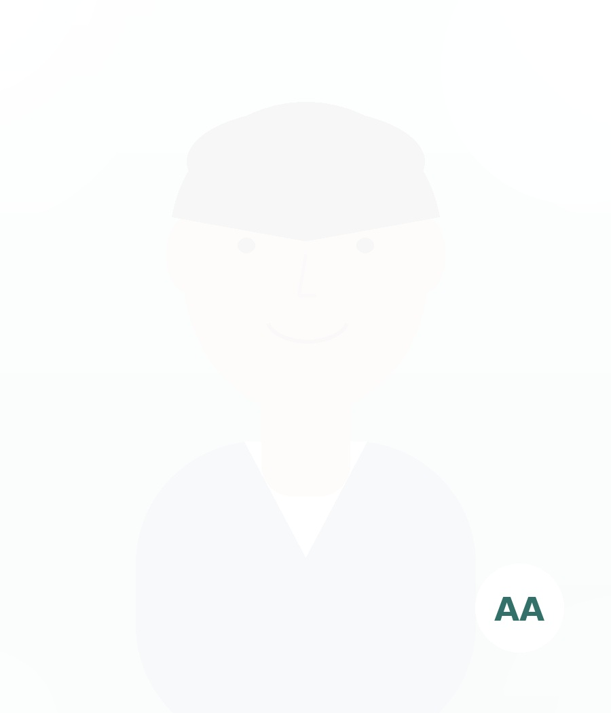
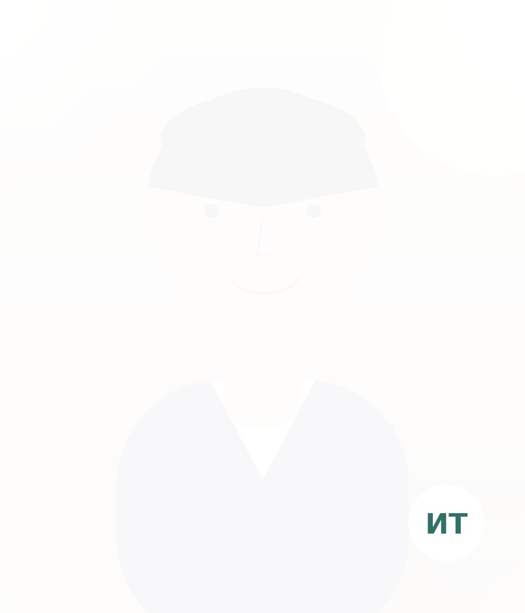
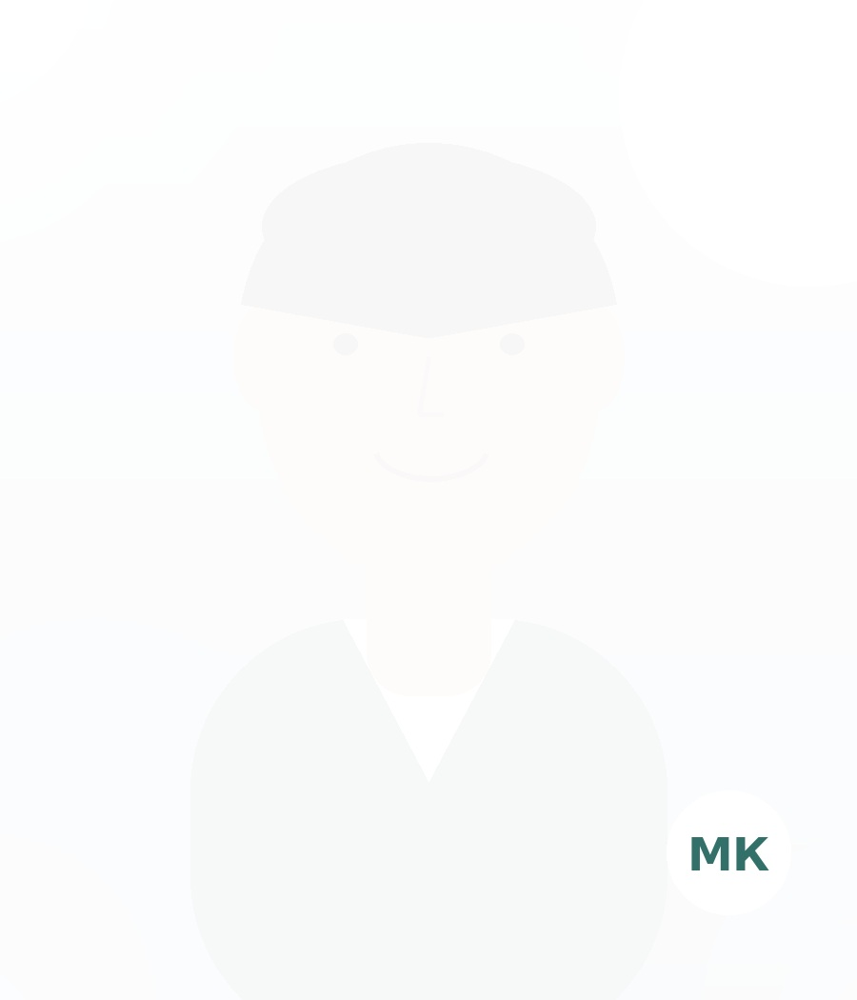

Семейный психолог
Александров Александр
Семейная и парная терапия, кризисы отношений, стресс и профессиональное выгорание.
О специалистеНа отдельных страницах представлены фотографии специалистов, направления их работы, образование и основные запросы, с которыми можно обратиться.

Семейная и парная терапия, кризисы отношений, стресс и профессиональное выгорание.
О специалисте
Тревожные состояния, панические реакции, сложности адаптации и психосоматические проявления.
О специалисте
Самооценка, повторяющиеся жизненные сценарии, внутренние конфликты и личностные кризисы.
О специалисте